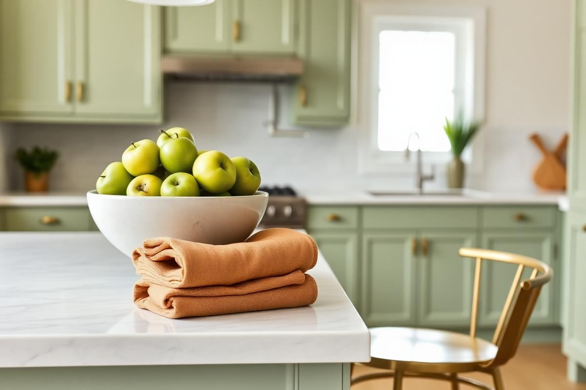

Kitchen Color Schemes That Won't Feel Dated

Kitchen Color Schemes That Won't Feel Dated is one of those topics where a little planning goes a long way. In this guide I walk through the process we use in real homes — not just what looks good in a photo, but what actually holds up over time.
Start here
Before you buy or move anything, measure the space and note how you actually use it. The best-looking room is one that matches how you live, so start with the routines: where you sit, where you drop keys, where the light falls in the afternoon.
The essentials
Focus on the pieces that do the most work. Get those right and the rest of the room comes together with much less effort. Aim for materials that patina rather than degrade, and colors you will still like in five years.
- Choose one clear focal point per room.
- Pick materials that improve with age.
- Layer textures instead of adding more colors.
- Leave visual breathing room — negative space is a design element.
Common mistakes
The mistakes we see most often are matching everything too tightly, over-scaling accessories, and skipping proper lighting. Fix those three and most rooms improve overnight.

Mastering the Underscored Palette
The secret to enduring kitchen color schemes isn't just picking the 'right' main color, but understanding its undertones. An olive green, for instance, might lean yellow or grey. Identifying this allows for seamless integration of secondary colors, preventing clashes. For a green with a yellow undertone, consider brass hardware and cream-colored ceramics. If it leans grey, brushed nickel or matte black fixtures and stark white ceramics will feel more cohesive. To test, hold a swatch against a warm white (with a yellow base) and a cool white (with a blue or grey base) in both natural and artificial light. You’ll be surprised how different it looks. This small step saves significant repainting headaches.
When pairing, aim for a 60-30-10 rule: 60% dominant color (cabinets, walls), 30% secondary (backsplash, countertops), and 10% accent (hardware, lighting, small appliances). For a timeless look, ensure your 30% has a similar undertone to your 60%. For example, a blue-grey cabinet color (cool undertone) pairs beautifully with a marble-effect quartz countertop (Caesarstone Statuario Maximus, approximately $80-$120 per square foot installed) that also features cool grey veining, rather than a warm beige granite. This thoughtful layering of undertones prevents a disjointed appearance that quickly dates a space.
The Luminous Effect: Lighting and Color
Lighting plays an often-underestimated role in how kitchen colors are perceived. A brilliant white wall can appear stark and blue under cool-toned LED lighting, or warm and creamy under incandescent bulbs. Before committing to a paint color, test large swatches (at least 2’x2’) on different walls and observe them throughout the day, as natural light shifts. Then, introduce your preferred artificial light sources. For kitchens, aim for 3000K-4000K (natural white) LEDbulbs as general illumination to achieve true color representation, with warmer 2700K bulbs used for accent lighting over an island or under cabinets to add coziness. The average kitchen requires 20-30 lumens per square foot for proper task lighting.
- Undercabinet lighting: Essential for task visibility and revealing the true color of your backsplash. Opt for LED strips that are at least 90 CRI (Color Rendering Index) to ensure colors look accurate.
- Pendant lighting: While decorative, their light output can significantly affect island countertop and adjacent cabinet colors. Ensure bulbs match the color temperature of your general lighting.
- Natural light: Assess the direction of your windows. North-facing kitchens receive cool, consistent light, making warm colors feel inviting. South-facing kitchens get bright, warm light, which can intensify warm colors, making cool tones feel refreshing.
For example, painting a north-facing kitchen's upper cabinets in a deep Farrow & Ball 'Hague Blue' (a cool color, approximately $120/gallon) would benefit from layered warm artificial lighting (e.g., brass globe pendants with 2700K bulbs) to prevent it from feeling too cold. Conversely, a south-facing kitchen with 'Benjamin Moore White Dove' (a warm white) on walls might benefit from a cooler accent like a muted sage green island to balance the natural warmth.
Material Harmony: Beyond Paint and Cabinets
A kitchen's color scheme is a symphony of all its elements, not just the painted surfaces. Think about your flooring, backsplash, countertops, and even your window treatments. For a truly timeless feel, introduce texture and subtle variations in your chosen color scheme through these materials. For instance, if your dominant color is a soft greyish-green, consider a white oak hardwood floor (approximately $6-$12 per square foot for materials) that offers warmth and texture, rather than a stark grey tile that might flatten the palette over time. A polished marble backsplash (starting around $15 per square foot for Carrara) can reflect light and add understated luxury, even in a monochromatic scheme, due to its natural veining.
Similarly, hardware is a critical, yet often overlooked, part of the color story. Brushed brass handles on a navy cabinet (approximately $8-$25 per pull) introduce a warm metallic accent that feels intentional and sophisticated. Avoid mixing too many metal finishes unless there's a clear, deliberate reason (e.g., black faucet with brushed brass pulls, but not five different metals). Remember, natural materials inherently possess variations in tone and texture that contribute to visual interest without clashing. For example, a white kitchen can be made dynamic by incorporating a butcher block island top ($40-$100 per square foot) or stone-effect porcelain tiles ($3-$10 per square foot) with subtle color shifts, adding depth without introducing a jarring new color.
Strategic Statement Accents
Instead of bold accent walls that can quickly date, focus on strategic, easily changeable elements to introduce pops of color or sophisticated contrast. Think textiles, small appliances, and artwork. A series of three counter-height bar stools in a bold ochre yellow (e.g., Target's Threshold brand, around $70 each) against a backdrop of deep charcoal cabinets instantly energizes the space without permanent commitment. Similarly, high-quality linen hand towels, a Le Creuset Dutch oven (starting around $200), or a curated collection of ceramics ($30-$150 per piece) can inject personality. The key is to keep these items grouped or strategically placed to create visual impact.
Another effective strategy is to use plants. Their natural greens and textures add life and an organic pops of color that never feel dated. Consider a large Fiddle Leaf Fig in a woven basket (plant + pot, $150-$300) in an empty corner, or a row of small herbs on a windowsill in terracotta pots. Artwork, too, offers an opportunity for color injection and can be swapped out over time. A large abstract piece above a hutch featuring one or two colors from your primary scheme plus a complementary accent can tie the room together beautifully. This approach ensures your foundational scheme remains timeless, while the accent pieces offer flexibility for evolving tastes. For instance, using a deep forest green for secondary elements like a kitchen island base, then accenting with ceramic vases in a dusty rose, is far more enduring than painting an entire wall in rose pink.
Longevity-Proofing: The Cost-Effective Approach
Making long-term color choices doesn’t mean sacrificing style, but rather investing wisely. The elements hardest and most expensive to change—cabinets, countertops, and major appliances—should anchor your timeless scheme. Opt for neutral, versatile colors for these foundational pieces. A classic off-white, light grey, or muted wood tone for cabinets ($5,000-$30,000 for standard kitchen-sized cabinets) paired with a durable, neutral countertop like honed black granite or a white quartz with subtle veining ($4,000-$10,000 for an average kitchen) will provide an excellent canvas. Avoid trendy bright colors or highly patterned choices for these items, as they date quickly and are costly to replace.
Where you can afford to experiment with color is in the more easily updated elements. Paint, for instance, costs significantly less (approximately $40-$70 per gallon) and can transform a kitchen in a weekend. Backsplashes, while more involved, are still less costly to update than countertops or cabinets, with many stylish options available under $10 per square foot for material alone. Prioritize quality and timelessness for your big investments. Then, layer in personality and current trends sparingly with paint, lighting fixtures (a new pendant can cost $100-$500), hardware ($50-$300 for a kitchen), and textiles. This 'big investment, small swap' strategy ensures your kitchen remains fresh and desirable for years with minimal financial outlay.
Evaluating Future Resale Value
When approaching kitchen color schemes, particularly for a home you might sell in the next 5-10 years, considering resale value is prudent. While your personal taste matters, universally appealing choices often lead to quicker sales and better returns. Neutrals are your safest bet. Think Benjamin Moore's 'Revere Pewter' (a warm grey, around $70/gallon), Sherwin-Williams' 'Agreeable Gray' (a soft greige), or Farrow & Ball's 'Strong White' ($120/gallon). These colors provide a clean, modern backdrop that allows potential buyers to envision their own style. Avoid highly saturated or polarizing colors like bright orange or deep purple, which can alienate a significant portion of the market, regardless of how on-trend they are today.
- White or off-white kitchens: Consistently rank highest in buyer preference, offering a sense of cleanliness and spaciousness.
- Light to medium grey: A sophisticated and versatile alternative to white, especially when paired with natural wood or metallic accents.
- Navy or forest green island: A popular choice for adding a touch of color and luxury without overwhelming the entire space. It allows for a trending color on a contained element that can be repainted if tastes shift.
Furthermore, ensuring your color scheme integrates smoothly with adjacent living spaces is crucial. A jarring color transition between the kitchen and dining room can feel disjointed. Opt for a palette that flows naturally, using complementary or analogous colors. This cohesive design enhances the overall perceived value of the home. Remember, a timeless kitchen is often one that feels serene, functional, and implicitly stylish, rather than overtly trendy. This doesn't mean boring, but rather carefully considered.
Key takeaways
- Match the room to how you actually live.
- Anchor with one main piece and clear lighting.
- Layer textures, not colors.
- Leave breathing room around every object.
Frequently asked questions
Where should I start?
Start with the largest piece and the light. Everything else — art, textiles, small objects — is easier to place once those two anchors are set.
What is a realistic budget?
Prioritize the pieces you touch every day. Spend more on those and less on decorative items, which are easy to swap over time.
How long should this last?
A well-chosen main piece should last 10–15 years. Refreshes come through textiles, art, and accessories, not full replacements.

Sophia Bennett is a certified interior stylist and the senior editor at Styleire. She has spent more than eight years helping homeowners and renters create warm, functional interiors, with hands-on experience across small city apartments and family homes. Her work has been informed by close collaboration with independent designers, craftspeople, and product testers.
View full profile →Related reading

Open Kitchen Shelving: When It Works, When It Doesn't
Open shelving looks great in photos. In real kitchens, it is a lifestyle choice, not a style choice.

How to Build a Warm Neutral Color Palette for Your Home
Warm neutrals are the safest and most flattering base for a whole-home palette. Here is how to build one on purpose.

Kitchen Backsplash Ideas That Still Feel Fresh
Kitchen Backsplash Ideas That Still Feel Fresh — a clear, editor-tested guide covering the essentials without the filler.